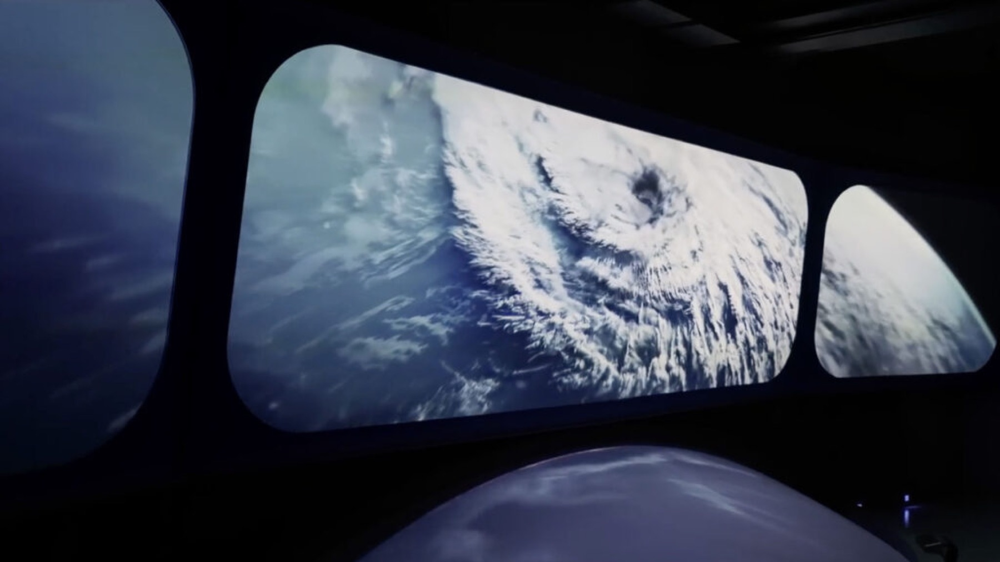

Longs métrages, séries et documentaires passent par nos salles pour le son, l'image et les effets visuels. Les quatre plus récents ont été sélectionnés en festival, de Cannes à Tribeca, ou diffusés par la RTS et Netflix.
Chaque fiche film indique ce qui a été fait ici, dans quelle salle, et quel résident l'a fait. La filmographie complète commence [À VALIDER : date de référence de la maison (2004 sous le nom Freestudios, 2022 ou 2024)].
Chutier · filmographie[À VALIDER : liste validée des films (33 titres relevés : 31 chez Cinetic Creatives, 2 de plus sur downtownstudio.ch)]
À bras-le-corps
A Thousand Fires
Allégorie citadine
Ariaferma
Bulle
Ceux qui rougissent
Desire
Espèce menacée
Favolacce
Gabin
Gloria!
Hors saison
Intraçables
L'Étincelle
L'Ofrena
La Beauté de l'âne
La Cache
La Chimère
La Dérive des continents
La Mif
Laundry
Lazzaro felice
Le Procès du chien
Le Vent tourne
O vento assobiando nas gruas
Peau à peau
Renaissance
Rivière
Sauve qui peut
Say God Bye
The Arab
Until Branches Bend
Winter Palace
03Créer · Together
Together, au Portail des Nations
En décembre 2024, la Fondation Portail des Nations confie à Downtown Studio la direction créative de Together, l'expérience immersive du nouveau centre de visiteurs de l'ONU à Genève. Il reste alors un an avant l'ouverture.
Le parcours fait vivre le multilatéralisme avant de le nommer. Chaque salle est guidée par une voix, un Hôte. Le mot n'est prononcé qu'à la fin, quand les trois voix parlent ensemble.

Together · Portail des Nations, Genève
Séquence · le parcours, salle par salle00:00 · durées du storyboard
00:0016:0832:1648:2564:33
E0 · International GenevaLa Genève internationale11:45
E1 · Get togetherHôte : le Langage18:03
E2 · Work togetherHôte : la Connaissance19:35
E3 · Act togetherHôte : la Réponse15:10
Révélation
Pré-accueil et boutique non représentésDowntown Studio · direction créative depuis décembre 2024
Production exécutiveDowntown Studio
Direction créativeDowntown Studioavec Local Projects et Dorier
Production des contenusCinetic Creativesrésident fondateur
Durée[À VALIDER : durée de l'expérience Together (1 h selon la maquette, 1 h 23 au storyboard)]
Visiteurs[À VALIDER : nombre de visiteurs de Together depuis l'ouverture]
Partenaires[À VALIDER : nombre de partenaires de Together (9 selon la maquette, 60 selon la note stratégique)]
Des studios et des indépendants ont leurs bureaux dans la maison. Downtown les réunit sur les projets qu'on lui confie, et vous pouvez aussi travailler avec eux en direct.
TousImageSonRéalisationProductionXR / IADesign
Résident fondateur
Cinetic Creatives
Maison créative installée dans les murs. Son équipe d'une vingtaine de personnes couvre la post-production cinéma, du montage son aux effets visuels.
[À VALIDER : phrase décrivant le lien entre Downtown Studio et Cinetic Creatives (même direction, maison née de Freestudios)]
Mixage, étalonnage, montage et tournage sous un même toit, avec une équipe technique sur place. Les salles se louent à l'heure ou à la journée ; les membres paient moins.
Le fonds incitatif genevois rembourse jusqu'à 30 % des dépenses de post-production faites à Genève. [À VALIDER : conditions et éligibilité du fonds incitatif genevois]
Besoin d'un opérateur ? Mixeur, étalonneur ou monteur : les salles se louent aussi avec un professionnel de la maison. Devis sous 48 h.Demander un devis →
06Apprendre
Se former sur de vraies productions
Les formations sont portées par Progress, association indépendante hébergée par Downtown Studio et soutenue par la FFPC et la Fondation Wilsdorf.
Deux formations sont annoncées : L'avenir de la post-production et Progress AI. Le détail et l'inscription se font sur le site de Progress ; la résidence Explore accueille de son côté de jeunes structures pendant un an.
Formation · inscriptions à venir
L'avenir de la post-production
Production assistée par l'intelligence artificielle, en studio. Un tronc commun suivi par tout le groupe, puis une spécialité pratiquée auprès d'un professionnel de Downtown Studio, sur les productions du studio.
IA et création cinéma. Trois modules autonomes de cinq jours suivent la fabrication d'un film, de la bible visuelle au film hybride, sur un scénario fil rouge commun.
M1Fondations visuelles. Bible visuelle de production.
Résidence Explore · Creative Futures. Douze mois de bureau, de domiciliation et de membership pour quatre projets de moins de trois ans. Appel : [À VALIDER : statut de l'appel Creative Futures (le délai annoncé était le 30 septembre)]La résidence →
Une méthode de travail, partagée avec Progress
01Avec votre mentor
Apprendre le métier
Vous pratiquez les méthodes et les logiciels de votre spécialité sur les productions du studio.
02Vous
Suivre les évolutions
Vous repérez les outils d'IA susceptibles de s'insérer dans le flux de travail de votre métier.
03Vous
Tester
Vous éprouvez l'outil sur un cas réel et mesurez la qualité obtenue, le temps nécessaire et les limites rencontrées.
04Avec votre mentor
Intégrer
Vous présentez vos essais à votre mentor et déterminez ensemble comment intégrer l'outil au flux de travail du studio.
Nouvelle sortie · retour à la veille
4recorders formés pour l'auditorium Atmos, premier programme Lift
12jeunes professionnels formés au son, au mixage et à l'étalonnage sur Winter Palace et Renaissance
Rencontres, soirées d'écoute, conférences et formations ouvertes, au 10 rue des Vieux-Grenadiers. Les dates passées rejoignent les archives d'elles-mêmes.